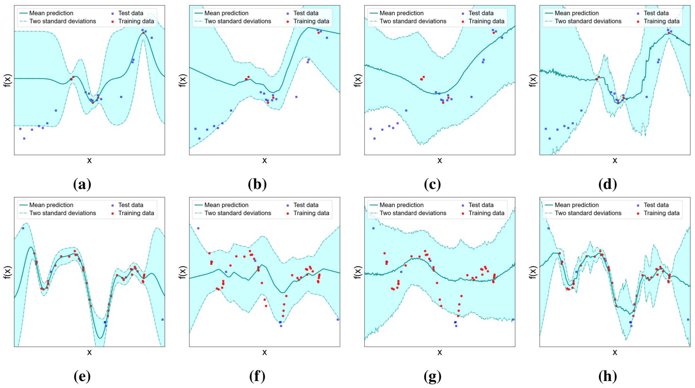

An assortment of physical systems exist that can be considered stochastic processes. For example, diffusion and heat transfer can be modelled as Brownian processes, and the number of decays from a radioactive sample can be modelled as a Poisson process. In daily life, social network dynamics, traffic flow and stock market prices are routinely modelled using the mathematics of stochastic processes.
A stochastic process, $\mathcal{P}$, defines a family of random variables, which may have a finite or infinite number of components. Each realisation of a stochastic process ${y_x, x \in \mathcal{X}}$ is an assignment of a possible value of $y_x$ to each $x \in \mathcal{X}$ (Karlin, 1968). When the domain $\mathcal{X}$ is real-valued, such a realisation corresponds to a function, $f$, mapping $x$ to a corresponding value $y_x$. 1 Thus we can interpret a stochastic process as defining a distribution over functions, with each sample from $\mathcal{P}$ corresponding to a different function.
We can completely characterise a stochastic process by specifying the joint distribution of every finite family $y_{x_1}, y_{x_2}, … , y_{x_n}$ of variables. 2 By placing restrictions on the form of the joint distribution, inference can be made tractable. One such example of this is the Gaussian process, a widely used stochastic process that has found success in a variety of domains.
Gaussian processes
A Gaussian process (GP) is a stochastic process for which the joint distribution of any finite subset of the set of random variables is Gaussian. GPs are now used extensively in a range of applications, including in Bayesian optimisation, reinforcement learning and property prediction.
A GP is wholly specified by a mean function $m(x)$ and covariance
function $k(x, x’)$, where for $\mathit{f} \sim \mathcal{P}$:
$$\begin{aligned}
m(x) &= \mathbb{E}[f(x)] \\
k(x, x’) &= \mathbb{E}[(f(x) - m(x))(f(x’) - m(x’))].\end{aligned}$$
Often $m(x)$ is set to be 0. The covariance function specifies the
covariance between the random variables $f(x)$ and $f(x’)$. For
commonly used examples such as the squared exponential and Matérn
covariance functions, the covariance is close to unity when inputs
$x$ and $x'$ are in close proximity, but reduces to zero as
their separation distance increases.
The choice of mean and covariance function dictates the properties of the sampled functions, such as smoothness, lengthscale and periodicity. Through these choices, the inductive biases are specified. For example, consider the squared exponential kernel: $$k(x, x’) = \exp{\left(-\frac{|x - x'|^2}{2l^2} \right)}.$$
Here, the hyperparameter $l$ is a measure of the lengthscale in input space over which random variables are no longer significantly correlated. In practice, the prior hyperparameters are learnt through maximisation of the marginal likelihood $p(X|l)$ (Rasmussen and Williams, 2006), as outlined in my previous post.
Let us now consider that we have made some noisy observations, $y= { y_i } _{i=1}^m$ at locations $X={x_i}_{i=1}^m$. We will assume that these observations are our window for gaining insights about the underlying function $f$ from which the observations were made. We want to predict the value of the function at an additional number of locations, $X^{*} = {x_i}_{i=m+1}^n$.
Assuming that observations are corrupted by Gaussian noise with variance $\sigma^2$,
the joint distribution of the observed values $y$ and the test values $f_{*}$ is
$$
\left[\begin{matrix}
\mathbf{y} \\
\mathbf{f}_{*}
\end{matrix}\right] \sim \mathcal{N}\left(\mathbf{0},\left[\begin{matrix}
k(X, X)+\sigma^{2} I & k(X, X_{*}) \\
k\left(X_{*}, X\right) & k\left(X_{*}, X_{*}\right)
\end{matrix}\right]\right).$$
Conditioning on the observed values, we obtain the posterior distribution over $f_{*}$:
$$ f_{*} | X, y, X_{*} \sim \mathcal{N}(\bar{f_{*}}, \mathrm{cov} \left(f_{*}\right)) $$
where $$ \bar{f_{*}} = k\left(X_{*}, X\right)\left[k\left(X, X\right)+\sigma^2I \right]^{-1} y $$ and $$ \mathrm{cov}\left(\mathbf{f}_{*}\right) =k\left(X_{*}, X_{*}\right)-k\left(X_{*}, X\right)\left[k(X, X)+\sigma^{2} I\right]^{-1} k\left(X, X_{*}\right). $$
Intuitively, the posterior covariance is comprised of the prior covariance $k(X_*, X_*)$ and a subtracted positive term $k\left(X_{*}, X\right)\left[k(X, X)+\sigma^{2} I\right]^{-1} k\left(X, X_{*}\right)$, which corresponds to a reduction in uncertainty due to the additional information that we have gained from our observations.
Exact inference in the GP model has computational complexity $\mathcal{O}(m^3)$ due to the need to invert the $m \times m$ matrix $k\left(X_{*}, X\right)+\sigma^2I$, which restricts the application of exact GPs to small datasets. Approximations have been developed that reduce the complexity to $\mathcal{O}(mp^2)$, where $p$ is some number of inducing points $p<m$ (Quiñonero-Candela and Rasmussen, 2005, Titsias, 2009). Along with the computational complexity, inference using GP models is challenging due to the need to select or design an appropriate kernel (with corresponding hyperparameters) for the task at hand.
Neural processes
The term neural processes was introduced to describe a family of models which use neural networks to model stochastic processes with complex joint distributions, of which the first was introduced just a few years ago (Garnelo et al., 2018a) with many variants developed since.
Let us consider that for some system, there is an underlying stochastic process, $\mathcal{P}$,
from which we may sample a function $f$. Each time we sample a function, we are given access
to $m$ noisy observations ${x_i, y_i}_{i=1}^m$. Given these observations, we wish to
predict the values of the function at $n$ additional inputs ${x_i}_{i=m+1}^{m+n}$.
This corresponds to finding the posterior predictive distribution
\begin{equation}
p(y_{m+1:m+n}|x_{1:m+n}, y_{1:m}) = \int p(y_{m+1:m+n}|f, x_{m+1:m+n})p(f|x_{1:m+n}, y_{1:m}) df,
\end{equation}
which is obtained by marginalising out $f$. Generally, this integral is intractable,
which motivates the use of variational inference, which I introduced in a previous post.
A characterising assumption made by neural processes is that all information about $f$ is captured by some
global latent variable $z$, such that
\begin{equation}
p(y_{m+1:m+n}|f, x_{m+1:m+n}) = p_{\theta}(y_{m+1:m+n}|x_{m+1:m+n}, z),
\end{equation}
where $\theta$ represents the learnable parameters of the likelihood (in this case, the model parameters).
We assume conditional independence of the function values, given $z$, such that the joint distribution is given by
\begin{align}
p(y_{m+1:m+n}, z|x_{1:m+n}, y_{1:m}) &= p(z|x_{1:m}, y_{1:m}) \prod_{i=m+1}^{n+m} p_{\theta}(y_i|x_i, z).
\end{align}
This is related to the posterior predictive distribution $p(y_{m+1:m+n}|x_{1:m+n}, y_{1:m})$ by Bayes’ theorem
\begin{align}
p(y_{m+1:m+n}|x_{1:m+n}, y_{1:m}) &= \frac{p(y_{m+1:m+n}, z|x_{1:m+n}, y_{1:m})}{p(z|x_{1:m+n}, y_{1:m+n})} \\
&= \frac{p(z|x_{1:m}, y_{1:m}) \prod_{i=m+1}^{m+n} p_{\theta}(y_i|x_i, z)}{p(z|x_{1:m+n}, y_{1:m+n})}.
\end{align}
We introduce the variational distribution $q_{\phi}(z|x_{1:m+n}, y_{1:m+n})$ which serves as an
approximation to the posterior $p(z|x_{1:m+n}, y_{1:m+n})$. Following the framework laid out in a previous post on
variational inference, we find that
\begin{align}
\small \log{p(y_{m+1:m+n}|x_{1:m+n}, y_{1:m})} = \mathcal{L}_{\mathrm{ELBO}} + \textrm{KL}[q_{\phi}(z|x_{1:m+n}, y_{1:m+n}) || p(z|x_{1:m+n}, y_{1:m})]
\end{align}
where
\begin{equation}
\small \mathcal{L}_{\mathrm{ELBO}} = \mathbb{E}_{q_{\phi}(z|x_{1:m+n}, y_{1:m+n})}\left[\log \left(\frac{p(z|x_{1:m}, y_{1:m})}{q_{\phi}(z|x_{1:m+n}, y_{1:m+n})}\right) + \sum_{i=m+1}^{m+n} \log p_{\theta}(y_i|x_i, z) \right]
\end{equation}
In practice, the conditional prior $p(z|x_{1:m}, y_{1:m})$ is unknown, so we will approximate it with $q_{\phi}(z|x_{1:m}, y_{1:m})$, such that
\begin{equation}
\small \mathcal{L}_{\mathrm{ELBO}} = \mathbb{E}_{q_{\phi}(z|x_{1:m+n}, y_{1:m+n})}\left[\log \left(\frac{q_{\phi}(z|x_{1:m}, y_{1:m})}{q_{\phi}(z|x_{1:m+n}, y_{1:m+n})}\right) + \sum_{i=m+1}^{m+n} \log p_{\theta}(y_i|x_i, z) \right]
\end{equation}
The relationship between the ELBO and the marginal likelihood enables us to find an approximation to the model parameters which maximise the marginal likelihood, and to the variational parameters which best approximate the posterior.
This is achieved by jointly optimising the ELBO with respect to variational and model parameters.
3
Employing the amortised variational inference framework outlined here, $q_{\phi}$ is parameterised by an encoder function $h$, which takes as input each observation tuple $(x_i, y_i)$ and outputs an encoding $r_i$, and a permutation invariant aggregation function $a$ which aggregates these encodings, usually using a simple mean or sum operation. This aggregated encoding, $r$, is the input to a neural network, which outputs the parameters of a Gaussian distribution over the latent variable $z$: \begin{equation} z \sim \underbrace{\mathcal{N}(z| \mu_{\phi}(r), \sigma^2_{\phi}(r))}_{q_{\phi}(z|x_{1:m+n}, y_{1:m+n})}. \end{equation} The variational parameters $\phi$ are the parameters of these functions. In the Conditional Neural Process variant (Garnelo et al., 2018a), $\mu_{\phi}$ and $\sigma_{\phi}$ are defined as $\mu_{\phi}(r)=r; \sigma^2_{\phi}(r)=0$, however in general these functions are learned.
For real-valued outputs, the likelihood $p_{\theta}(y_i|x_i, z)$ is modelled as \begin{equation} p_{\theta}(y_i|x_i, z) = \mathcal{N}(z|\mu_{\theta}(x_i, z), \sigma_{\theta}^2(x_i, z)). \end{equation} Here, ${\mu_y, \sigma_y}$ are the outputs of a decoder function with parameters $\theta$ which takes as input the concatenation of $x_i$ and $z$. 4
To reiterate, the set of model parameters (which corresponds to the parameters of the decoder function) are learnt concurrently with the set of variational parameters (which corresponds to the parameters of the encoder function), through maximisation of $\mathcal{L}_{ELBO}$. At test time, inference using the NP requires a single forward pass through the model, with an associated computational cost of $\mathcal{O}(n+m)$. For large datasets, this represents a great reduction in computational cost compared to inference using an exact GP. It should be noted that this does not account for the time taken to train the NP which is often significant.
Making predictions
The predictive distribution is given by \begin{equation} p(y_{m+1}|x_{1:m+1}, y_{1:m}) = \int p(y_{m+1:m+n}|x_{m+1}, z)p(z|x_{1:m}, y_{1:m}) dz. \end{equation} We approximate this using the approximate posterior in place of the true posterior \begin{equation} p(y_{m+1}|x_{1:m+1}, y_{1:m}) \approx \int p(y_{m+1}|x_{m+1}, z)q_{\phi^*}(z|x_{1:m}, y_{1:m}) dz \end{equation} This still amounts to propagating a Gaussian distribution through a non-linear transformation. Instead, we use a Monte Carlo estimate as \begin{equation} p(y_{m+1}|x_{1:m+1}, y_{1:m}) \approx \frac{1}{T}\sum_{t=1}^{T} p(y_{m+1}|x_{m+1}, z^{(t)}); \quad z^{(t)} \sim q_{\phi^*}(z|x_{1:m}, y_{1:m}), \end{equation} where $T$ is the number of samples.
Example: 1D regression
To demonstrate how training of these models occurs in practice and to study the relative performance of each model, I consider a one-dimensional regression task. Here, the data comprises a set of 1000 datasets, each of which contains between 5 and 100 tuples $(x, y)$ and is a randomly generated sample from a GP prior with mean and covariance functions given by
\begin{equation} \small m(x) = 0 \end{equation} \begin{equation} \small k(x, x’) = \sigma_1^2\left(1 + \frac{\sqrt{3}r}{l_1}\right)\exp{\left(-\frac{\sqrt{3}r}{l_1}\right)} + \sigma_2^2\left(1 + \frac{\sqrt{5}r}{l_2} + \frac{5r^2}{3l_2^2}\right)\exp{\left(-\frac{\sqrt{5}r}{l_2}\right)}, \end{equation} where $r=|x - x'|$, $\sigma_1^2 = 2$, $l_1 = 1$, $\sigma_2^2 = 1$ and $l_2 = 2$.
I compare the performance of the Gaussian process with the squared exponential kernel (with learnable hyperparameters), the original Neural Process (NP), the Conditional Neural Process (CNP) and the Attentive Neural Process (ANP) (Garnelo et al., 2018a, Garnelo et al., 2018b, Kim et al., 2019). My Python implementation of these models can be found here.
 1D regression task predictions for two of the 1000 training datasets, the first (a-d) having $n \gg m$ and the second (e-h) having $n \ll m$. For both cases, from left to right, predictions are made by the GP (squared exponential kernel), CNP, NP, ANP respectively.
We see that the GP produces a good fit but could be considered overly smooth. The NP and CNP both suffer from underfitting which is resolved by the ANP through the incorporation of attention. Both the NP and the ANP are less smooth than the CNP which could be attributed to the need to take a finite number of samples of $z$ and $y$ to calculate the mean and variance of the output.
Next time…
In this post I gave an overview of how we can learn to model stochastic processes using probabilistic machine learning models. Specifically, I study two such ML models, namely Gaussian processes and neural processes. Modelling data as being drawn from a stochastic process is one way that we can incorporate uncertainty into our models in a principled manner.
In my next post I plan to delve into another topic entirely, namely reinforcement learning.
Thanks for reading! Questions and feedback are always much appreciated - please don’t hesitate to get in touch.
References
(Karlin, 1968): Samuel Karlin. Elements of Stochastic Processes. In A First Course in Stochastic Processes, Elsevier, 1968.
(Florescu, 2014) Ionut Florescu. Probability and Stochastic Processes. John Wiley & Sons, 2014.
(Rasmussen and Williams, 2006) Carl E. Rasmussen and Christopher K. I. Williams. Gaussian processes for machine learning. MIT Press, 2006.
(Snoek, Larochelle and Adams, 2012) Jasper Snoek, Hugo Larochelle, and Ryan P. Adams. Practical Bayesian Optimization of Machine Learning Algorithms. NIPS, 2012.
(Kuss and Rasmussen, 2004) Malte Kuss and Carl E. Rasmussen. Gaussian Processes in Reinforcement Learning. Advances in Neural Information Processing Systems, 2004.
(Quiñonero-Candela and Rasmussen, 2005) Joaquin Quiñonero-Candela and Carl E. Rasmussen. A Unifying View of Sparse Approximate Gaussian Process Regression. Journal of Machine Learning Research, 2005.
(Titsias, 2009) Michalis K. Titsias. Variational Learning of Inducing Variables in Sparse Gaussian Processes. Proceedings of the 12th International Conference on Artificial Intelligence and Statistics (AISTATS), 2009.
(Garnelo et al., 2018a) Marta Garnelo, Dan Rosenbaum, Chris J. Maddison, Tiago Ramalho, David Saxton, Murray Shanahan, Yee Whye Teh, Danilo J. Rezende, and S. M. Ali Eslami. Conditional Neural Processes. Proceedings of the 35th International Conference on Machine Learning, Stockholm, Sweden, PMLR 80, 2018.
(Garnelo et al., 2018b) Marta Garnelo, Jonathan Schwarz, Dan Rosenbaum, Fabio Viola, Danilo J. Rezende, S. M. Ali Eslami, and Yee Whye Teh. Neural Processes. ICML 2018 workshop on Theoretical Foundations and Applications of Deep Generative Models, 2018.
(Kim et al., 2019) Hyunjik Kim, Andriy Mnih, Jonathan Schwarz, Marta Garnelo, Ali Eslami, Dan Rosenbaum, Oriol Vinyals, and Yee Whye Teh. Attentive Neural Processes. ICLR, 2019.
-
Note that this is not the conventional notation for a stochastic process, which usually has the index parameter labelled $t$, for time, with corresponding random variable $X_t$. This is because of the usual interpretation of a stochastic process as describing the evolution of a randomly evolving system over time. Here we breach convention to generalise the index parameter to an arbitrary number of dimensions. ↩︎
-
In general, we cannot study the joint distribution of an infinite number of random variables (Florescu, 2014). ↩︎
-
A fully Bayesian approach would specify a prior distribution over model parameters and then compute the corresponding posterior, which is then integrated over when computing posterior predictive distributions. ↩︎
-
The decoder is trying to produce $f(x_i)$. To do so, it needs to have knowledge both of $f$, and the input location $x_i$. Assuming that $z$ is an adequate summary of $f$, we anticipate that for a flexible enough likelihood, a forward pass through the decoder will be able to reproduce $f(x_i)$ from $z$ and $x_i$. ↩︎